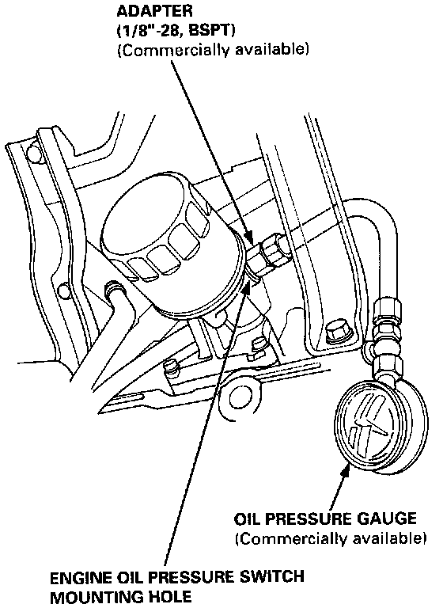

Engine Oil Pressure: Testing and Inspection
If the oil pressure warning light stays on with the engine running, check the engine oil level. If the oil level is correct:1. Connect a tachometer.
2. Remove the engine oil pressure switch, and install an oil pressure gauge.
3. Start the engine. Shut it off immediately if the gauge registers no oil pressure. Repair the problem before continuing.

4. Allow the engine to reach operating temperature (fan comes on at least twice). The pressure should be:
Engine Oil Temperature: 176°F (80°C)
Engine Oil Pressure:
At Idle: 69 kPa (10 psi) minimum
At 3,000 rpm: 340 kPa (50 psi) minimum
- If oil pressure is within specifications, replace the oil pressure switch and recheck.
- If oil pressure is NOT within specifications, inspect the oil pump.